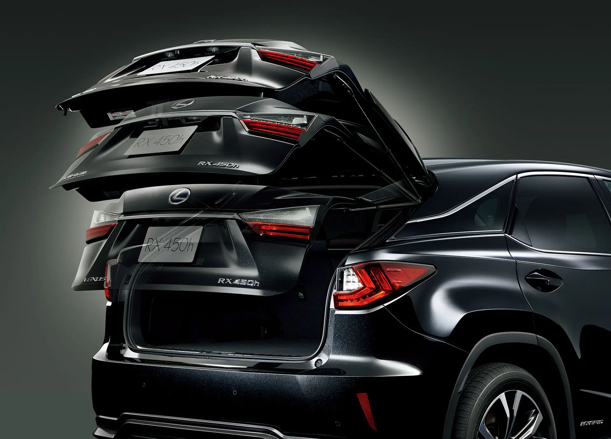

Tips Merawat Power Backdoor Agar Awet & Tidak Cepat Rusak

Fitur Power Backdoor (Pintu Bagasi Elektrik) saat ini sudah menjadi standar pada mobil MPV dan SUV kelas menengah ke atas. Fitur ini sangat memudahkan pemilik mobil untuk membuka dan menutup bagasi hanya dengan menekan tombol atau menggunakan sensor kaki.
Jangan Lakukan Hal Ini!
Penyebab utama kerusakan power backdoor adalah kesalahan penggunaan. Berikut hal yang harus dihindari:
- Menutup Secara Paksa: Jangan pernah menekan pintu bagasi secara manual saat motor elektrik sedang bekerja. Ini bisa merusak gir dan motor elektrik di dalamnya.
- Menghambat Pergerakan: Pastikan tidak ada barang yang menghalangi pintu saat sedang menutup. Meskipun ada sensor anti-jepit, beban yang berulang bisa melemahkan motor.
- Membiarkan Engsel Kotor: Debu dan kotoran pada engsel akan membuat beban motor menjadi lebih berat.
Power Backdoor Mulai Macet?
Jika pintu bagasi Anda terdengar bunyi kasar atau tidak bisa menutup rapat, segera lakukan pengecekan sebelum motor elektrik terbakar.
Konsultasi Servis GratisTips Perawatan Harian
- Bersihkan Rel dan Engsel: Gunakan kain bersih untuk menyeka kotoran secara berkala.
- Gunakan Pelumas Semprot: Semprotkan cairan pelumas (silicone spray) pada bagian engsel untuk mengurangi gesekan.
- Cek Tegangan Aki: Sistem elektrikal sangat bergantung pada kondisi aki. Pastikan aki mobil Anda selalu dalam kondisi prima.
Dengan perawatan yang tepat, sistem power backdoor Anda akan bertahan lama. Namun jika kerusakan sudah terjadi, Sahara Sliding Door Jakarta siap membantu perbaikan dengan suku cadang original dan teknisi ahli.